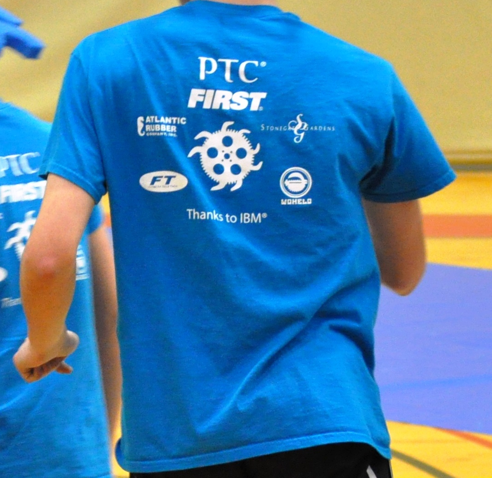

We have found FTC to be more expensive than FLL. Would you please consider making a donation to our team?
Any sponsors that contribute $250 or more will get their logo put on our robot.
Please send your tax-deductible contribution to Lincoln-Sudbury Regional High School, attn Diane Kaufman, 390 Lincoln Road, Sudbury, MA 01776-1409. Be sure to indicate "FTC Gear Ticks" in the memo line. Also send an email to our team FTC6055gearticks@gmail.com so that we can acknowledge your gift and add you to our robot.
